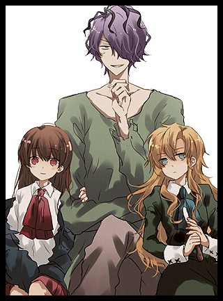

 |
In the game, the protagonist, Ib, meets two people in her adventure through the world of Guertena, namely Garry and Mary. Ib treats Garry as he does to her. She likes him very much and feels safe near him. Garry is very important to Ib, as she even goes so far as to give him her precious hankerchief given to her from her mother when he cuts his finger. Since the player chooses most of Ib's choices with Garry, their actualy relationship may vary. Ib, at first, is glad to meet Mary so she can continue the search for a way out together. She thinks of Mary as her best friend/sister, just as Mary feels towards Ib. Even though Ib thinks of Mary as her sister, she is closer to Garry since they have known each other longer. She acts almost the same way towards Mary as she does to Garry, but doesn't trust her much in the end. Ib feels sorry after leaving Mary. Garry is kind to Ib and acts like an older brother or guardian. Even when he is startled and frightened, he always thinks about Ib. A good example is after he escapes the doll room (barely getting away with his life), he immediatly rushes to save Ib from Mary. He also feels very protective of Ib, which is seen when, in one possible outcome, he gives his rose to Mary in exchange for Ib's. On the other hand, Garry doesn't show a lot feelings for Mary. They are strangers to each other, and his opinion of Mary isn't easily explored in the short time she travels with Ib and Garry. He treats her like an ordinary girl, but doesn't show any interest in her as he does with Ib (which he expresses after Mary discontinues following his tips for keeping her rose safe). He feels sorry for leaving Mary, but shows fear of her due to his discovery of her being a painting and a potential danger to Ib. Mary is somewhat of a sister to Ib. She is shown to be very attached to Ib since the first time they met, even if the player chooses to ignore her. Mary wants to get all of Ib's attention by pretending to be scared and walking all around the room. On the other hand, Mary doesn't seem to like Garry at all. She tries to kill him so she can leave the Fabricated World together with Ib. Mary tries to make Ib forget about Garry and leave him, which is seen in the Doll room if Garry doesn't succeed in escaping. She uses Ib's sensitivity to save herself and leave Garry behind, even if she knows it will be difficult to do so. Mary also feels that Garry is her competition, and as so, she is envious of him because Ib shows much more trust and loyalty to him than to her. Despite this, Mary trusts Garry as seen when she calls for his help in the Painting's Demise ending. |